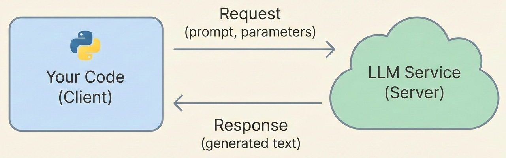
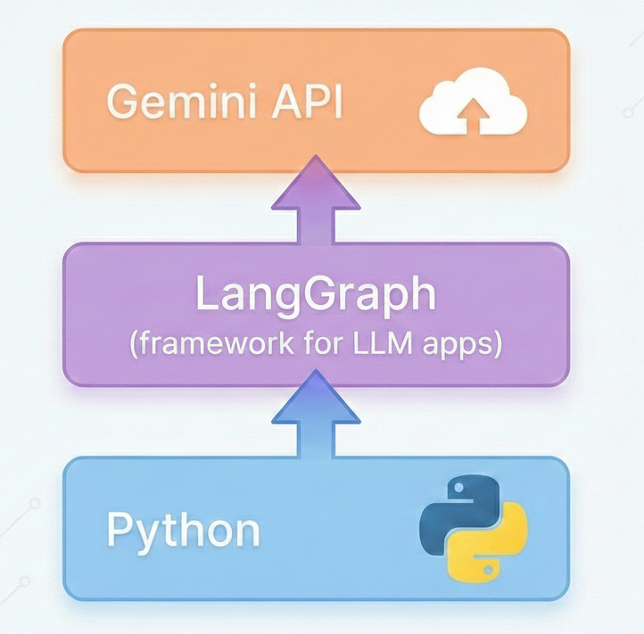

A way for programs to talk to each other using defined rules.

Request: Your code sends data (prompt, settings)
Response: The service sends back results (generated text)
Web APIs: the basics
Most modern APIs use HTTP:
Endpoint: A URL you send requests to https://api.example.com/v1/generate
Method: Usually POST for sending data, GET for retrieving
Headers: Metadata including authentication Authorization: Bearer sk-abc123...
Body: The actual data (often JSON) {"prompt": "Hello", "max_tokens": 100}
Calling an LLM via API
Instead of chatting in a browser, your code sends requests:
from google import genaiclient = genai.Client(api_key="...") # Your API keyresponse = client.models.generate_content( model="gemini-3-flash-preview", contents=["Explain quantum computing in one sentence."],)print(response.text)
This is the raw Gemini SDK — useful to understand what’s underneath.
LangChain: model-agnostic abstractions
Going forward, we’ll use LangChain to write portable code:
from langchain_google_genai import ChatGoogleGenerativeAIllm = ChatGoogleGenerativeAI(model="gemini-3-flash-preview")response = llm.invoke("Explain quantum computing in one sentence.")print(get_text(response)) # Helper function (next slide)
Why? Swap one import to change providers (OpenAI, Anthropic, etc.).
Extracting text from responses
Gemini 3 models return structured content (for “thinking” features). Use this helper:
def get_text(response) ->str:"""Extract text from LLM response.""" content = response.contentifisinstance(content, str):return contentifisinstance(content, list):return"\n".join( b.get("text", "") for b in content ifisinstance(b, dict) ).strip()return""
We’ll use get_text(response) instead of response.content throughout.
Our stack: Python + LangChain + LangGraph

LangGraph: state-based workflows
LangGraph uses a graph to define how your app flows: